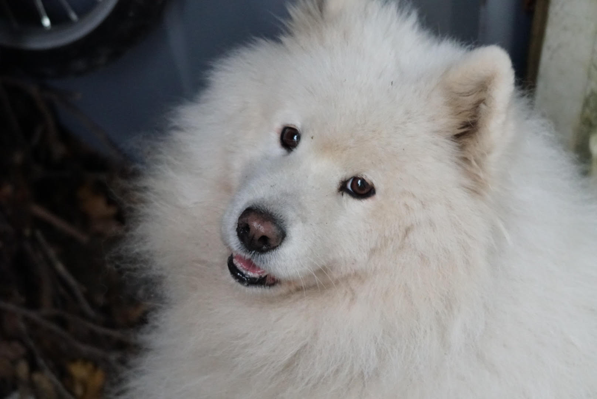
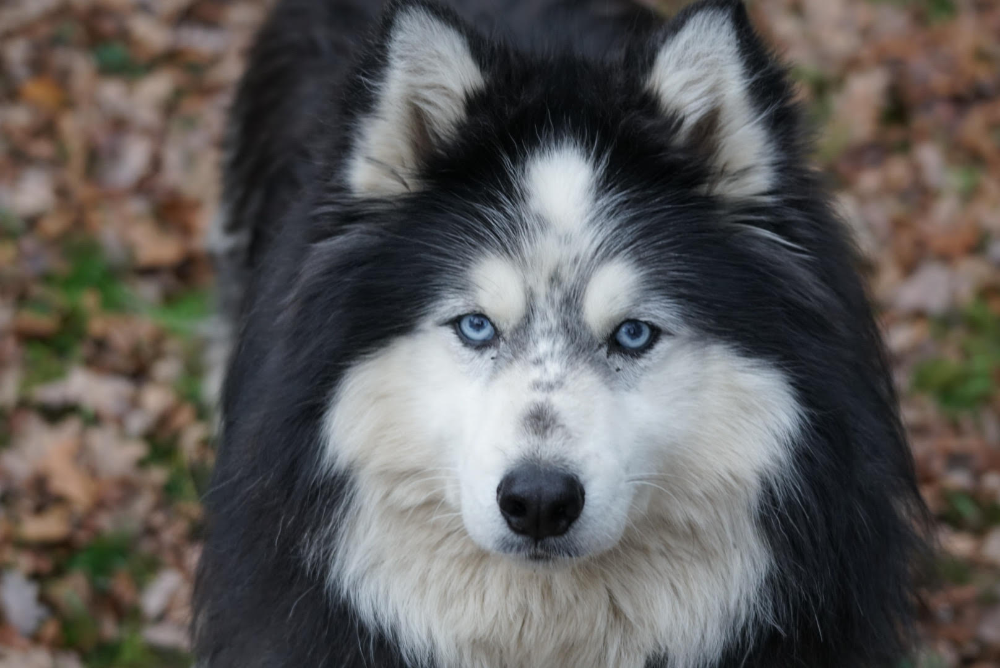

Hondenrasinformatie
De Samojeed
De Samojeed is een hoogbenig en langharig Russisch hondenras, behorend tot de pool- en keeshonden. Hij heeft zijn naam te danken aan het volk waarbij hij is ontdekt, de Samojeden. Hun dikke vacht is wit en ruw. Met dekhaar en een korte, dichte ondervacht. Door deze dikke ondervacht is het beter om dit ras voorzichtig te kammen in plaats van te borstelen. scr: wikipedia: https://nl.wikipedia.org/wiki/Samojeed
De Wooly Husky
De Wooly Husky is een Siberische Husky met een genetische afwijking waardoor ze langharig zijn. Ze worden vaan door elkaar gehaald met de Alaskan Malamute, maar het zijn toch twee andere rassen. Wooly Husky's hebben net als Samojeden en dichte korte ondervacht en een lang dekhaar. Bij de Wooly Husky is het haar wel een stuk minder ruw en valt het wat soepeler. Wooly Huskys hebben net als normale Husky's vaak prachtige blauwe ogen.
